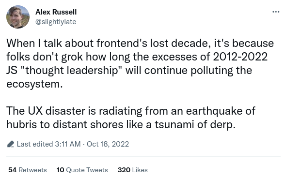
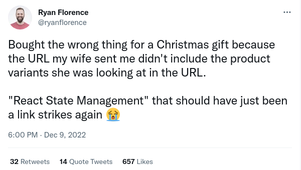

HTML Over the wire
PyWeb-IL 101
Relevant background for this talk
Developer > 35 years
Multiple languages, frameworks, paradigms
Work with most of the tools mentioned below
Handled frameworks, tooling & testing migrations
Frontend's lost decade
Yep, an opinionated and philosophic rant
Javascript 😠
In the old days (some goes into today):
- No stdlib
- No standard import mechanism
- Global scope by default for variables
- Wonky numbers handling (integers >253)
Thus leading to
- Relying on lots 3rd party libs (like
lodash,moment/day.js) - CommonJS and ES Modules
- Ever increasing downloaded code size
Evolving
- New features not supported yet, Babel and friends
- TypeScript will save us
- OMG, we need ....
Build Tools
👿
Give me Interactive
Yay! we got AJAX
Users can't wait for full page refresh
👇
JQuery & Mootools FTW
But we need it to resemble an application
👇
SPA, yeah baby
😢
SPA
Yep, we got it, now what?Validations
Need to validate both on client side and server side
Duplicate code and effort
REST
Needs to support the SPA
Ends up matching app needs instead of proper REST
Often need multiple queries to serve a single UI function
GraphQL FTW? N+1, needs more complex tooling, heavier load on the backend
SEO
What do you mean no SEO?
SSR
Hydration
State
Hmm, need to manage state and app data
Redux, Mobx, Vuex (past), Pinia (present)
What happened to the URLs?
Can't share links
Need to implement a routing solution
Representing all the options via Router and re-usable links is a hassle
Broken navigation (back button)
Leading to
Yep, he's the co-author of React Router
Down the Rabbit hole
- A solution introduces additional problems
- Which require other solutions
- Faster churn
- Harder to start for new developers
- Complex tooling and DevOPS
- Separate & larger teams
- Impedance mismatch - Synchronize between them
Complexity, Hulk Smash

Over the years I've learned to value simplicity
Revolutionary Idea:
What if HTTP actually served HTML?
💡
- Easy to get started
- Utilizes your existing backend stack
- No need for separate or larger teams
- Reduce the need for additional tooling
State of mind
Think of breaking the page to parts/partials
On some action, do an Ajax request
Replace parts of the page with returned HTML content
The secret sauce?
Combined with Alpine.js, Stimulus or Hypermedia
htmx
My favorite of the 3, choose your poison
Turns AJAX, CSS Transitions, WebSockets into declarative HTML attributes
Quick start
<script src="https://unpkg.com/htmx.org@1.8.4"></script>
<!-- have a button POST a click via AJAX -->
<button hx-post="/clicked" hx-swap="outerHTML">
Click Me
</button>
- When a user clicks on this button
- Issue an AJAX
POSTrequest to/clicked - Replace the button with the HTML response
See examples
Some Kool-Aid
Executive Summary
- Took ~2 months (from 21K LOC, mostly JS)
- No reduction in the application's UX
- Reduced the code size by 67%
- Reduced total JS deps by 96% (255 to 9)
- Reduced web build time by 88% (40 sec 5)
- First load time-to-interactive was reduced by 50-60% (from 2 to 6 seconds to 1 to 2 seconds)
- Much larger data sets were possible, react couldn't handle the data
- Web app memory usage reduced by 46% (75MB to 45MB)
Some Python Resources
OK Boomer, now what?
Not suggesting abolishing FE frameworks
Think are they really needed?
Be aware of inertia based decisions
Thanks!
Questions? Comments?